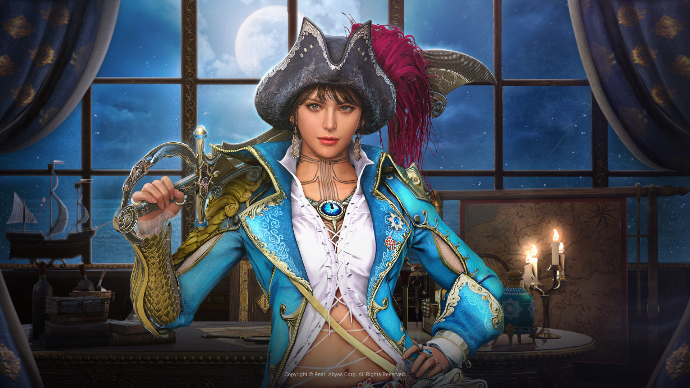
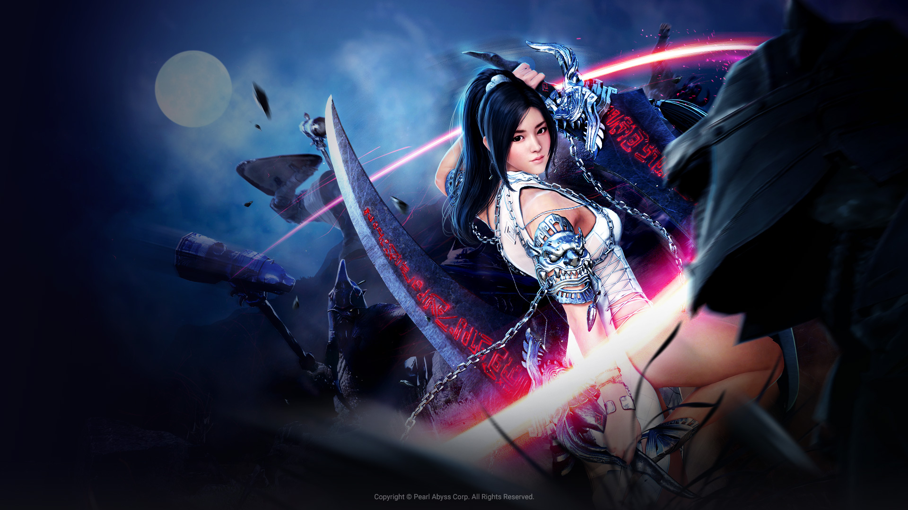
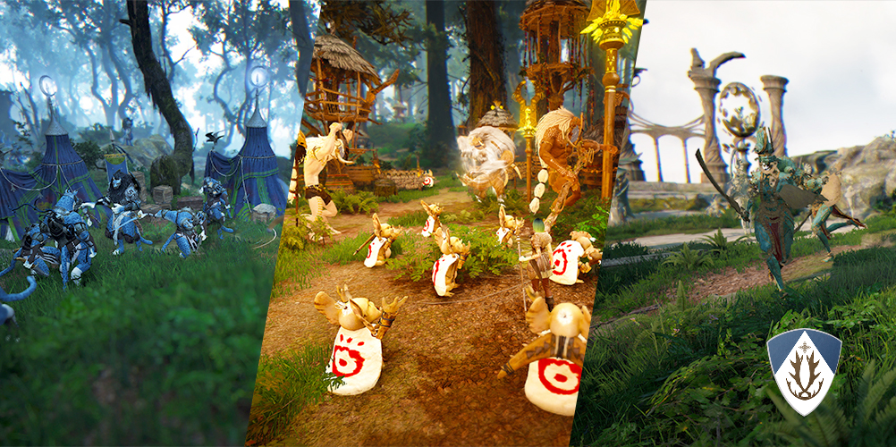

A propos
Black Desert est un jeu d'action riche en contenus dans lequel 20 millions d'aventuriers vivent des expériences toujours plus immersives et réalistes. C'est un MMORPG à monde ouvert qui ne cesse de proposer de nouveaux contenus pour offrir des voyages pleins de rebondissements. Entrez dès maintenant dans ce monde fantastique où des aventures extraordinaires vous attendent.
Notre Top 3



Zones de pve
PvE
Joueur contre environnement, ou PvE, est un terme utilisé par la plupart des jeux en ligne qui fait référence au combat contre des ennemis contrôlés par ordinateur, par opposition au PvP (Player versus Player). Dans Black Desert Online, le PvE consiste à vaincre un grand nombre de monstres groupés dans diverses zones dispersées dans l'univers du jeu, ce que l'on appelle le grinding ou farming, et les combats coordonnés contre des monstres de haut niveau appelés boss lorsqu'ils apparaissent dans certaines zones après avoir été annoncés par le système de jeu, entre autres.
PvP
Black Desert est un jeu très clairement orienté open PvP. Pas de RvR et de factions présentes donc, mais du GvG, avec la possibilité pour le joueur d'engager n'importe qui, n'importe quand, et n'importe où, à l'exception des "safe zones", typiquement les villes. Le libre arbitre est donc la pierre angulaire du système PvP de BDO, puisqu'il tient à chacun de faire librement ses propres choix, que ce soit dans la défense ou l'attaque, avec les conséquences qui en découlent. Des implications politiques, autant individuelles que collectives, que ce soit dans l'agression d'une personne ou d'un groupe d'une guilde adverse, la défense de son propre spot de farm ou la collaboration à un siège : voilà ce qu'aspire à nous offrir Pearl Abyss dans Black Desert à travers ce système PvP.
Lifeskills
Gameplay
Pour un MMORPG, ce jeu est le plus beau que nous ayons jamais joué. Les graphismes, les modèles de personnages, les animations et tout ce qui concerne le jeu sont incroyables. Je vous suggère de vous promener dans le vaste monde ouvert du jeu. Parce que c'est si beau ! Même si BDO est un MMORPG, son système de combat donne l'impression d'être un ARPG. Il est très orienté vers l'action et les mécanismes de combat sont vraiment fluides et dynamiques. BDO possède une carte massive que vous pouvez explorer à votre guise. Vous pouvez jouer au jeu pendant des mois, voire des années, et toujours trouver de nouvelles zones que vous n'avez pas vues. Le jeu propose de nombreux personnages différents pour s'adapter au style de jeu de chacun. Le plus intéressant est que Pearl Abyss, les développeurs de BDO, ajoutent régulièrement de nouveaux personnages comme récemment, la corsaire.